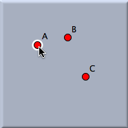
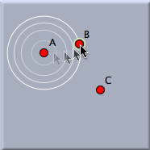
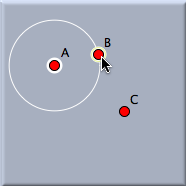
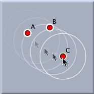
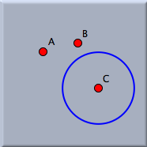

Compass

 |  |  |  |  |
||||
| First selection: The first point is highlighted. | Moving the mouse: Hints are shown for the distance. | Second selection: The distance is fixed. | Moving the mouse: Hints are shown for the position. | Third selection: The construction is finished. |
Synopsis
In Compass mode you select two points whose distance is the radius of a new circle centered at a third point.
Caution
The definition of a circle changes with the type of geometry (Euclidean, hyperbolic, or elliptic).
Page last modified on Friday 02 of September, 2011 [17:37:12 UTC].
The original document is available at
http://doc.cinderella.de/tiki-index.php?page=Compass